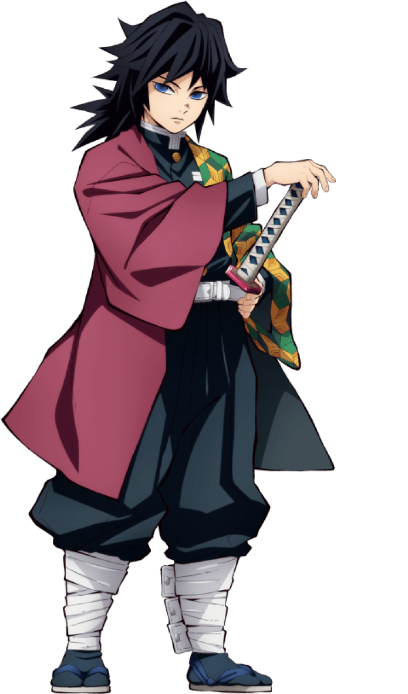

Go Back
Giyu Tomioka
Breathing style: WATER BREATHING
Giyu Tomioka is a major supporting character of Demon Slayer: Kimetsu no Yaiba. He is a Demon Slayer of the Demon Slayer Corps and the current Water Hashira.